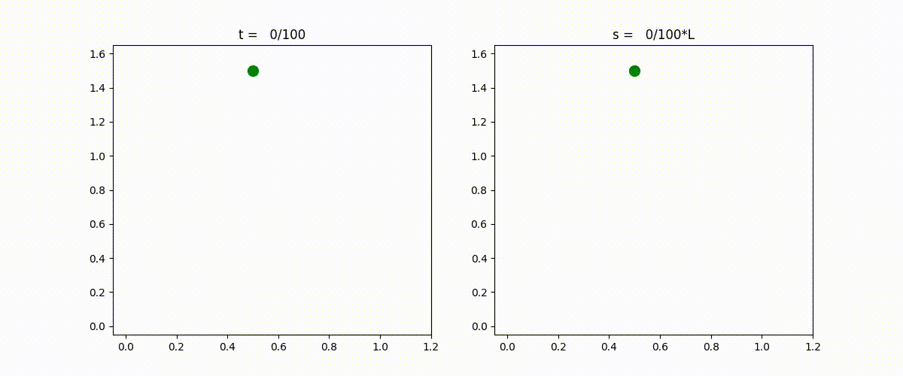
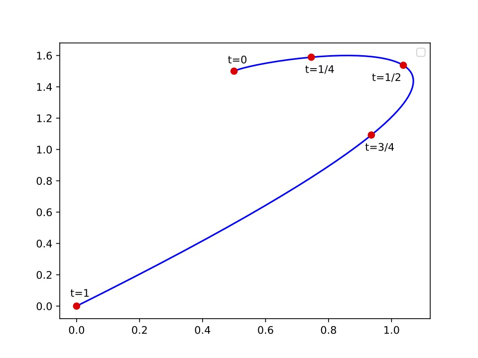
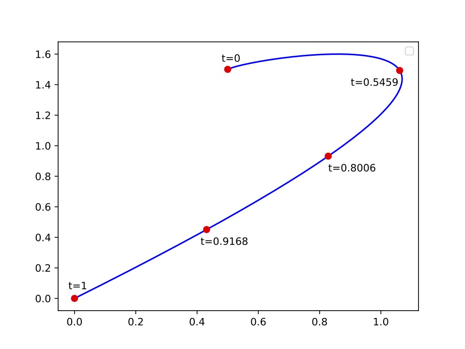

Reality check #5 consists of the four questions below.
Given
x = lambda t: 0.5 + 0.3 * t + 3.9 * t**2 - 4.7 * t**3
y = lambda t: 1.5 + 0.3 * t + 0.9 * t**2 - 2.7 * t**3
(Question 1) Create a function f(t) = sqrt ( x’(t)**2 + y’(t)**2 ) where
x(t) and y(t) are given above and x’(t) is the derivative of x(t) with respect
to t and y’(t) is the derivative of y(t) with respect to t. Then compute L the
integral of f(t) from t = 0 to t=1. For example, you can use:
scipy.integrate.quadrature(). Or you can use any method seen in Chapter 5. Give
your answer to 6 significant decimal places. Hint: The answer is L=2.49525.
(Question 2) Find the value of t_ such that the integral of f(t) from t
= 0 to t=t_ is s=0.4 using a root finding method. For example, you can use:
scipy.optimize.root_scalar(). Or you can use any method seen in Chapter 1. Give
your answer to 6 significant decimal places. Hint: The answer is t_=0.350239.
(Question 3) Repeat Question 2 with the following 24 values of s: s =
0.1, 0.2, 0.3, 0.4, . . . 2.2, 2.3 and 2.4.
(Question 4) Now solve the same problem as in Question 2 but this times
using Newton’s method. At each iteration of Newton’s method, display the
forward error, that is the absolute value of the difference between your
current iterate and the solution (as computed in Question 2). Use the solution
of Question 2 with as computed with 16-digit accuracy. (Do not use the solution
with only 6-digit accuracy.)
More information about the reality check:
We have a parametrized curve ( x(t), y(t) ) with parameter t that goes from 0
to 1. x = lambda t: 0.5 + 0.3 * t + 3.9 * t**2 - 4.7 * t**3 y = lambda t: 1.5
+ 0.3 * t + 0.9 * t**2 - 2.7 * t**3 So we can move on the curve with parameter
t that steps with uniform steps between 0 and 1. ttt = np.linspace( 0, 1,
1000) This is the left blue curve. You see that uniform steps in t does not
mean, uniform in space. The speed of the growth of the curve is sometimes
slower and sometimes faster. The goal of reality check is to try to have a
uniform growth in space. So the speed is constant. To do this, we will compute
L, the length of the arc. Choose a step size s from 0 to L. And then, for each
step size, s, find the parameter t_(s) such that length ( t_(s) ) = s. If you
do this you get the right red curve. You see that the speed of growth of the
red curve is now constant.
There are many applications where (1) the curves are parametrized by a
parameter “t”, (2) a uniform step size in “t” does not lead to uniform
(constant speed) displacement along the curve, and (3) it is desirable to have
constant speed. One example is “motion control”.
This is a practical application problem for what we have learned. We need to
able to (1) chapter 5: integrate along a curve to measure the length of a
curve, (2) chapter 1: able to find a root for f(x) = 0.
In this homework, we will not consider the full problem but we will just solve
two critical problems. If you want to complete the full problem then we simply
need to loop around these two critical problems and plot an animation and done.
(But you do not have to do it.)
Here is a colab code that plots the curve that we are studying in reality check
5 https://colab.research.google.com/drive/1nzCm8GhFeEk52b5Qe9SQVitm49V4hAVR
Please feel welcome to read the full description in the book and why this
matters. I typed a little bit of it https://langou.github.io/4650/rc5/rc5.pdf

